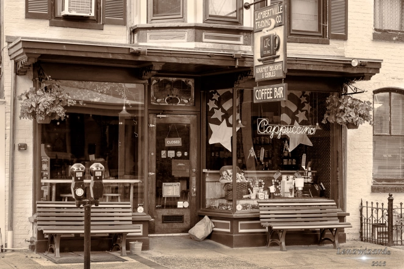

<link href="css.css" rel="stylesheet" type="text/css">
<link href='https://fonts.googleapis.com/css?family=Roboto' rel='stylesheet'>

<header>
  <h1></h1>
  <h1>Hot Beans Web Development </h1>

  <nav>
    <a href=Home.html>Home</a>
    <a href=Meet-The-Team.html> Meet The Team</a>
    <a href=Vacancies.html>Vacancies</a>
    <a href=Apply.html> Apply</a>
    <a href=Courses.html> Courses</a>
  </nav>
</header>
<main>
  <section>
    <article>
     <h2><b> Our History</b></h2>
      <p> Hot Beans Web Development was established in 2023 as a subsidiary of the innovative Hot Beans Group, to disrupt the Web Development market after centuries of dominating the coffee market. While we focus on cutting-edge web solutions, our roots trace back to a rich history through our sister company, Hot Beans Coffee, founded in 800 AD by the legendary Ethiopian goat herder, Kaldi. Inspired by his discovery of coffee's energizing properties, the Hot Beans Group has always been about sparking ideas and fueling progress. 

<h2><b>Our Present</b></h2>
<p>Today, Hot Beans Web Development is driven by a young, diverse, and dynamic team. Our passion for innovation and creativity fuels us to craft tailored, high-quality websites and digital solutions that empower businesses to succeed. With an inclusive culture and a forward-thinking approach, we combine technical expertise with bold ideas to set new standards in web development.</p>
      <h2><b>Our Future</b></h2>
      <p>As we look ahead, our mission is clear: to become a global leader in the web development market. Building on our foundation of excellence, we aim to dominate the industry by delivering transformative solutions that redefine how businesses connect with their audiences. Key to this vision is our commitment to nurturing the next generation of talent through apprenticeships, ensuring the continued growth of innovation and expertise. With an unwavering focus on quality, creativity, and impact, Hot Beans Web Development is ready to shape the future of the digital world.</p>

    </article>
  </section>
<main>
<section>
<article>
<p>
</br>
Our Founder - Kaldi
</br> 
<p>
</br>
The First Bean Discovered - 800AD
</br> 
<p>
</br>
Our Original Coffee Shop - 1865


</p>

</article>
  </section>
</main>
</main>
<footer>Website made by Daniel Weedall
</br>
<h1>


</h1>

</footer>